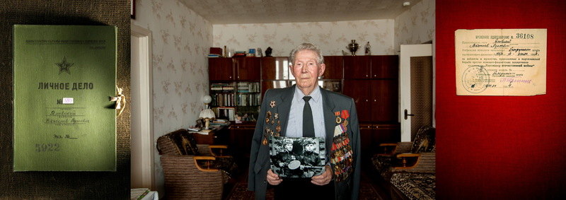

Яновский Вячеслав Адамович (20.02.1925-17.03.2022)

Вячеслав Яновский родился 24 августа 1957 г. в Витебске. Там же начал заниматься боксом в 13 лет у заслуженного тренера СССР Валерия Георгиевича Кондратенко. В 1981 году попал в сборную Советского Союза. В 1985 году был признан лучшим боксером турнира СССР — США. В том же году стал бронзовым призёром первенства Европы.
В 1987 году завоевал Кубок мира по боксу, стал серебряным призёром первенства Европы. В течение 2-х лет (1987—1988) завоевывал звание чемпиона СССР по боксу.
В 1988 году стал олимпийским чемпионом, а по итогам года вошёл в список лучших спортсменов Белоруссии. Яновский — единственный советский олимпийский чемпион Игр в Сеуле в боксе. Занял первое место в списке сильнейших боксёров Европы 1988 года по версии Международной ассоциации спортивной прессы (АИПС) в категории до 63,5 кг. После распада СССР, он оказался и последним советским олимпийским чемпионом по боксу. После 1989 года завершил карьеру в любительском боксе и перешёл в профессионалы.
6-кратный чемпион Японии, чемпион Германии среди профессионалов.
С 1994 по 1997 год выступал в Нижневртовске за клуб «Венко». В январе 1997 в Санкт-Петербурге выиграл бой у украинского полусредневеса В. Плотникова за звание чемпиона Паназиатской боксёрской ассоциации (ПАБА). К 1997 году, после завершения карьеры, он имел результат в 30 побед, 1 ничью и только 1 поражение.
В 1998—2000 — президент Федерации бокса Республики Беларусь.
Кавалер ордена «Знак Почёта» (1988). Почётный гражданин Витебска (1988). В Витебске боксёрский клуб назван именем Вячеслава Яновского.
20 февраля 2020 года отметил свое 95-летие ветеран Великой Отечественной войны Вячеслав Адамович Яновский. Будущий полковник милиции родился в деревне Ходаки Плещеницкого района Минщины. В семье росли трое детей, он — старший, и после смерти отца все тяготы легли на плечи 10-летнего паренька. Всеми силами помогал матери, к началу войны успел окончить семь классов. Когда немцы вошли в село, то сразу же сожгли школьную библиотеку, арестовали комсомольцев и коммунистов. В начале 1942-го партизаны ликвидировали полицейский участок, а в канун Первомая в деревню опять пришли каратели. В октябре часть населенного пункта разрушили с помощью авиации. Вячеслав Яновский чудом остался жив под бомбежкой, после чего с другом ушел в партизанский отряд «Мститель» бригады «Народные мстители» имени В. Т. Воронянского.
Только освоил винтовку, а уже через неделю колонны вышли к Вилейке, чтобы разгромить вражеский гарнизон. Бой продолжался пару-тройку часов, пока не последовала команда отойти: фрицы с пулеметами засели в костеле, и выбить их стрелковым оружием не получалось. А в апреле 1944 года «мстители» выдвинулись через болота к Лепелю. Неожиданность предвосхитила успех операции — фашистов разгромили, забрали у них две пушки…
С улыбкой Вячеслав Адамович вспоминает, как пришлось ему освоить в лесу ремесло кашевара:
— Только пришел в отряд, и на пятый день комвзвода говорит: «Будешь готовить еду с напарником». Я растерялся — 25 человек никогда не угощал. К утру нас разбудили. В лесу — темно и прохладно, стоял октябрь. Мы пошли за водой к лунке в болоте. В землянке порубили мясо, очистили картошку, пошинковали капусту и… сварили два ведра супа. Партизаны по очереди подходили с ложками, черпали и вновь возвращались за очередной «порцией».
Мать и сестра Яновского пережили плен, вернувшись домой в 1945 году. Сам же Вячеслав отслужил в 92-м учебном Карпатском Краснознаменном погранполку внутренних войск МВД СССР на охране особо важных объектов в Германии. Получил погоны старшего сержанта, командовал взводом. В 1950 году демобилизовался… на пепелище. Как и многие, подался в Минск. Решил обратиться в управление милиции, как-никак пару месяцев довелось патрулировать город. Через несколько месяцев пригласили инспектором в отдел ЗАГС, а по- настоящему прочувствовал особенности милицейской профессии Вячеслав Адамович в отделе наружной службы УМ МВД БССР, где состоялся его рост от инспектора до замначальника. Позже возглавил отдел милицейской, военизированной и сторожевой охраны управления вневедомственной охраны.
Остается добавить, что с супругой он познакомился на открытии Комсомольского озера в Минске, живут душа в душу 70-й год, воспитали сына и дочь, уже есть правнуки.
— Рад, что мы одолели злейшего врага, губителя рода человеческого, — со слезами на глазах вспоминает ветеран. — Желаю, чтобы такое не повторилось, и пусть белорусский народ помнит о тех жертвах, которые понес в те давние времена!